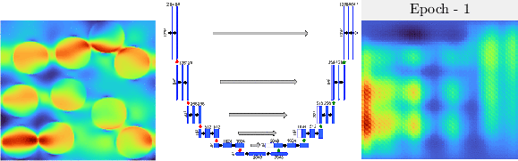

Deep learning based reconstructed microstructures (left) and corresponding fluid flow simulations (right)
True stress map (left) and evolution of precdicted stress map (right) using the U-net deep architecture (middle)
Propagation of uncertainty/variability from input
parameters to output quantities in data (simulated or real) is essential for
characterizing the underlying system. For complex systems, this
requires lots of data, which can be prohibitively expensive. Thus, for effective uncertainty propagation,
surrogate modeling is used to construct an efficient mathematical model - characterizing the system with minimal data.
My interest lies at the intersection of machine learning and uncertainity quantification, specifically in developing surrogate modeling approaches using deep neural networks,
stochastic collocation methods, etc. coupled with adaptive parameter sampling to tackle problems in
fields like solid mechanics, epidemiology, and molecular dynamics.